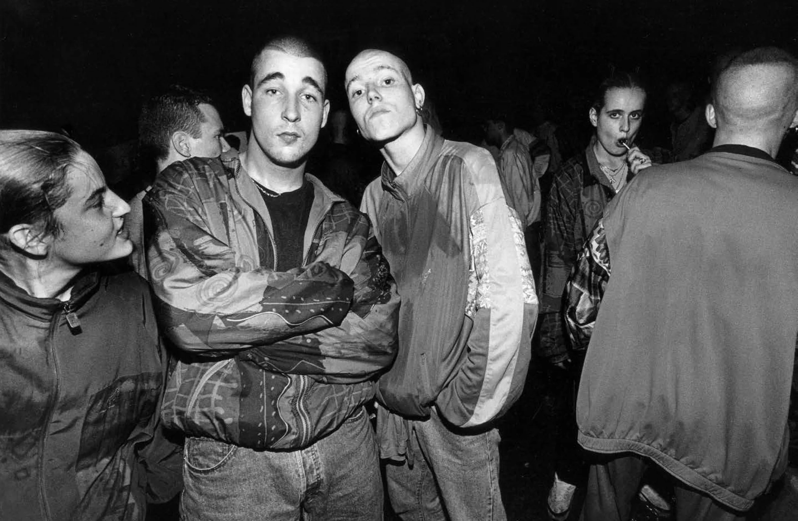
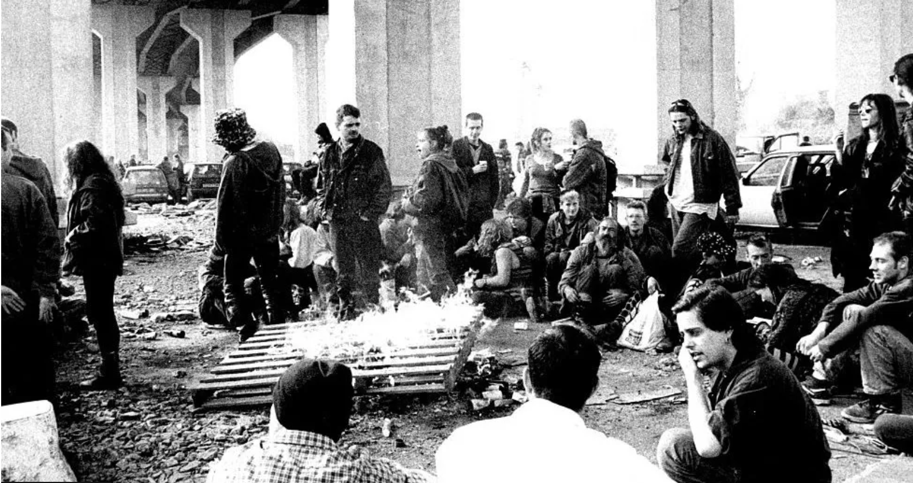

Illegale raves
Begin van de ravecultuur in Groot-Brittanië
De ravecultuur kan niet los worden gezien van de ontwikkeling van house en techno. De underground scene zoals dat heet heeft veel bijgedragen aan de subcultuur en dj's die later doorbraken in de mainstream. Dit geldt voor de Verenigde Staten en Europa. De steden in Amerika waar clubs niet in de buurt waren zorgden o.a. voor illegale feesten in leegstaande fabrieken eind jaren 90. In Groot-Brittanië zorgden de politiek van Margaret Thatcher die de vrije markt inzette en een groot voorstander was van individualisme in de samenleving voor een toename van illegale feesten. Door de grote kloof tussen rijk en arm wilden jonge mensen ontsnappen aan de moeilijke leefomstandigheden en de acid house die populair werd in de uitgaansgelenheid zorgde voor de perfecte ontsnapping. De illegele raves vonden steeds meer plaats. Mede door ook strenger deurbeleid, zochten meer jongeren hun heil in de illegale feesten. De Second Summer of Love in de UK was ook een vruchtbaar bodem voor illegale raves.
De groeiende populairiteit aan illegale feesten kreeg steeds meer bekendheid in de kranten en nieuwsmedia, de politiek reageerde hierop door anti feest wetten zoals de Entertainment Act, organisatoren zouden dan een boete ontvangen van £20.000. Dit hield de feestgangers niet tegen, illegale raves gingen nog steeds door en de weerstand tegen de politiek van Margaret Thatcher werd groter. Een van de belangrijkste keerpunten in de acid house geschiedenis van Engeland was de Freedom to Party demonstratie op 27 januari 1990. Meer dan 8000 mensen verzamelden zich op Trafalgar plein in London om hun onvrede te uiten over de Entertainment Act. Vertegenwoordigers van muzieklabels, organisatoren, artiesten, piratenzenders deden allemaal mee aan de demonstratie. Dit was een historische dag voor de culturele beweging van de house muziek en clubnachten.
Verleden van illegale raves in Nederland
In Nederland was er ook een illegale rave cultuur, deze was er vooral in de grotere steden in Amsterdam, Rotterdam, Den Haag en Utrecht. Het zullen er wellicht veel meer zijn, alleen bronnen hiervoor vinden blijft een lastig zoektocht. De meeste bekende in geschreven literatuur moet toch wel Multigroove zijn. Multigroove kwam alijtd met de gekste illegale locaties. Dit was vaak in lege fabriekspanden of afgelegen plekken. Het eerste grote illegale housefeest in Nederland was in september 1988. Dat feest vindt plaats in een loods op het KNSM-eiland en is georganiseerd door drie Engelsen onder de naam Soho Collective. Ondanks dat er te weinig drinken is ingeslagen en er een brand uitbreekt in een naastgelegen schip, is het feest bij veel mensen blijven hangen als het begin van de house in Nederland. Illegale feesten blijven in de jaren negentig ontzettend populair. De feesten gaan vaak gepaard met XTC en mensen dansen de hele nacht door op de oneindige energie die de pillen veroorzaken. In Nederland ontstaat er ook een nieuwe genre uit de house en techno, dit wordt hardcore. Een soort doorgefokte harde techno waarin het aantal beats per minuut drastisch wordt opgevoerd. Een nieuw subcultuur ontstaat, de gabbers.
Illegale raves in het heden
Illegale feestjes en raves is iets van alle tijden, maar de illegale raves zijn nooit weggeweest sinds eind jaren 80. In kraakpanden, verlaten industrieterreinen, onder een viaduct of een atelier. Er zijn altijd plekken waar de illegale raves zijn, je moet ze alleen kunnen vinden of de juiste mensen in het circuit of scene kennen. Vroeger kreeg je een nummer en moest je bellen voor de coördinaten of een naam of woord noemen en dan werd uitgenodigd. Soms is dat nog steeds zo, maar je hebt ook Telegram-groepen en instagram pagina's die de locatie aan een select gezelschap meegeven of je moet je aanmelden met je mailadres. De mogelijkheden zijn eindeloos. Sinds de Coronapandemie is de illegale rave scene zelfs nieuw leven ingeblazen, want met de avondklok en gesloten nachtclubs gingen mensen toch raves organiseren want het bloed kruipt waar het niet gaan kan zullen we maar zeggen. En op de illegale raves verdienen beginnende dj's nog altijd hun credits met de underground credibility die veelzeggend is in deze muziekstroming. De illegale raves vinden in 2023 nog altijd hun weg met geheime spots op afgelegen plekken of antikraakpanden, de mogelijkheden zijn er nog in steden waar steeds minder plek is voor de nachtclubs.
